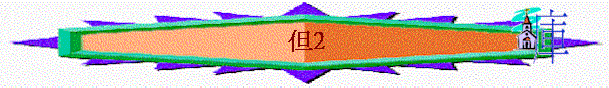

|
至 高 者 在 人 間 掌 權 |
|||||||||
|
至高者在人處事歷史中掌權 |
至高者在將來的世界中掌權 |
||||||||
|
王膳 |
解夢 |
火搖 |
獸人 |
指頭 |
獅坑 |
四獸 |
二羊 |
七十個七 |
南北王 |
|
1 |
2 |
3 |
4 |
5 |
6 |
7 |
8 |
9 |
10-12 |
一.至高者在人處身歷史中掌權（１－６）
２．超越的智慧（２）
～大臣、術士的智慧 vs 神的智慧
～究竟人間的智慧從那裏來？ 人的智慧是否勝過神呢？
a.最難答的問題
「王吩咐人將術士、用法術的、行邪術的，和迦勒底人召來，要他們將王的夢告訴王，他們就來站在王前。王對他們說：「我做了一夢，心裡煩亂，要知道這是什麼夢。」迦勒底人用亞蘭的言語對王說：「願王萬歲！請將那夢告訴僕人，僕人就可以講解。」王回答迦勒底人說：「夢我已經忘了（或作：我已定命；八節同），你們若不將夢和夢的講解告訴我，就必被凌遲，你們的房屋必成為糞堆；」V.2-5
「迦勒底人在王面前回答說：「世上沒有人能將王所問的事說出來；因為沒有君王、大臣、掌權的向術士，或用法術的，或迦勒底人問過這樣的事。王所問的事甚難。除了不與世人同居的神明，沒有人在王面前能說出來。」」V.１０－１１
～忘記了的問題
～答不到要被處死的問題
～所有君王、術士，大臣答不到的問題
b.但以理的面對
i.信心的回覆
「王的護衛長亞略出來，要殺巴比倫的哲士，但以理就用婉言回答他，向王的護衛長亞略說：「王的命令為何這樣緊急呢？」亞略就將情節告訴但以理。但以理遂進去求王寬限，就可以將夢的講解告訴王。」V.１４－１６
ii.同伴的支持
「但以理回到他的居所，將這事告訴他的同伴哈拿尼雅、米沙利、亞撒利雅，要他們祈求天上的神施憐憫，將這奧秘的事指明，免得但以理和他的同伴與巴比倫其餘的哲士一同滅亡。」V.１７－１８
iii.祈禱的等候
「要他們祈求天上的神施憐憫，將這奧秘的事指明，免得但以理和他的同伴與巴
比倫其餘的哲士一同滅亡。」V.１８
c.奧秘事的顯明
～神在夜間藉異象顯明奧秘的事
i.但以理的反應
（１）稱頌神
「這奧秘的事就在夜間異象中給但以理顯明，但以理便稱頌天上的神。但以理說：「神的名是應當稱頌的！從亙古直到永遠，因為智慧能力都屬乎他。祂改變時候、日期，廢王，立王，將智慧賜與智慧人，將知識賜與聰明人。祂顯明深奧隱秘的事，知道暗中所有的，光明也與祂同居。」V.１９－２２
（a）神的能力
～掌管時間
～掌管王權
(b) 神的智慧
～擁有智慧（智慧是屬乎祂）
～掌管智慧（可隱藏、可賜予）
（２）感謝神
「我列祖的神啊，我感謝，讚美，因將智慧才能賜給我，允准我們所求的，把王的事給我們指明。」V.２３
（a）賜恩賜
（b）允祈禱
（３）見証神
（a）只有一位能顯明奧秘之事 →顯明神的超越
「只有一位在天上的神能顯明奧秘的事。祂已將日後必有的事指示尼布甲尼撒王。你的夢和你在床上腦中的異象是這樣」V.28
（b）非他自己能勝過一切活人 →見証神的工作
「至於那奧秘的事顯明給我，並非因我的智慧勝過一切活人，乃為使王知道夢的講解和心裡的思念。」v.30
ii.奧秘事的揭終
概覽的形容
|
物 |
形 容 |
預 表 |
|
大 像 |
甚高 極其光耀 形狀可怕 |
世上的國之地位 尊榮 影響力 |
|
材 料 |
精金、銀、銅、鐵、半鐵半泥 |
不同國度的特色及強弱 |
|
位 置 |
頭、胸、腰、腿、腳 |
不同時候，按先後出現 |
仔細的描述
|
部 位 |
特 色 |
預 表 |
考古歷史發現 |
|
|
頭 |
最先、頂、首 |
尼布甲尼撒王是諸王之王 日後之國必不及於他 |
～巴比倫中宮殿用黃金舖切 ～黃金之多是世界之冠 |
|
|
胸與臂 |
銀胸與臂 |
在頭以下 比金較不貴重 分開二手 |
～巴比倫後興起的－瑪代與波斯的聯合國度 ～權勢不及巴比倫 |
～瑪代波斯以銀作幣值，只 納稅進貢，以銀為單位 |
|
肚腹與腰 |
銅肚腹與腰 |
～第三個興起之國－希臘 ～必掌管天下 |
～希臘人煉銅術馳名於世 ～希臘的亞歷山大戰無不 勝，統一世界很多地方 |
|
|
腿 |
鐵腿 |
－必堅壯 －腿分二 |
～第四個興起之國－羅馬 ～能壓制列國 |
～羅馬兵器用純鐵煉成，剛硬無匹 ～初期雄霸四方 ～後期分裂成東西羅馬帝國 |
|
腳 |
半泥半鐵的腳 |
－攙雜 |
－必有鐵的力量 －但半強半弱 －分列多國有多王 －不能彼此相合 |
～主後４７６年，東西羅馬國正式分裂之後，分散成為不同的國家
|
|
非人手鑿出來的石頭 |
－非人手而來 －打摔大像 |
－神另立的一國 －永不敗 －打碎那一切國 |
（應指將來的彌賽亞國度）
|
巴比倫 → 瑪代波斯 → 希臘 → 羅馬 → 分散王國 →彌賽亞國度
iii.君王的回應
（１）對至大的神－肯定
「王對但以理說：「你既能顯明這奧秘的事，你們的神誠然是萬神之神、萬王之主，又是顯明奧秘事的。」」２：４７
（２）對屬神的人－賞賜
「於是王高抬但以理，賞賜他許多上等禮物，派他管理巴比倫全省，又立他為總理，掌管巴比倫的一切哲士。但以理求王，王就派沙得拉、米煞、亞伯尼歌管理巴比倫省的事務，只是但以理常在朝中侍立。」２：４８－４９